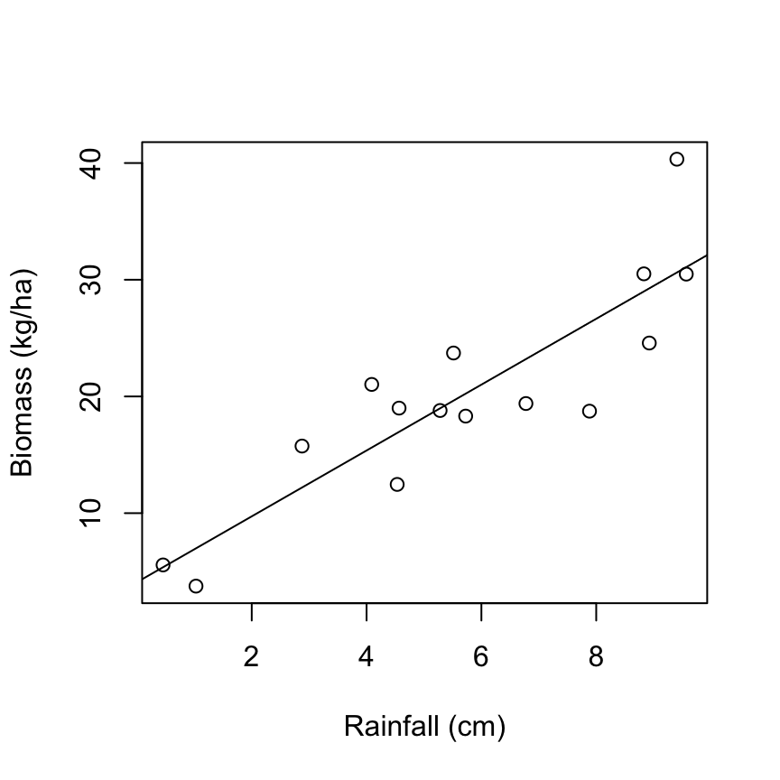
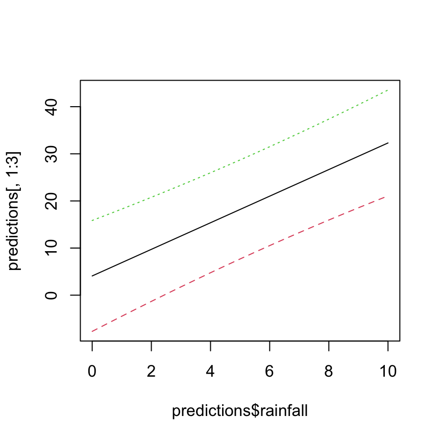
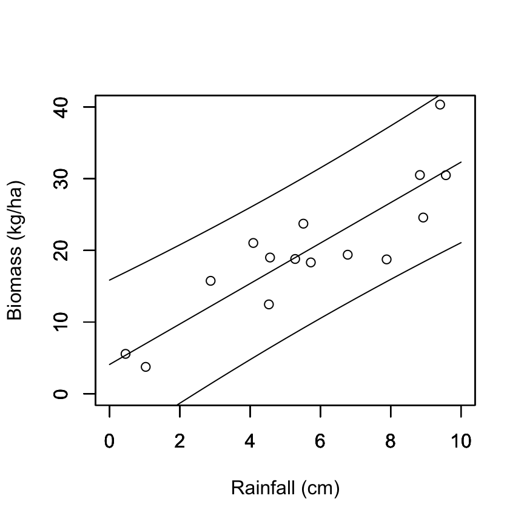

Linear Regression - predictions
NRES 710
Last compiled: 2024-08-01
Predictions
Using our statistical models (i.e., our statistical analyses) to make predictions is a really important component of science. Perhaps the ultimate goal. We are seeking to understand nature and make predictive models for how it works! If you can’t make predictions from your statistical model, then we might argue that your model needs some work.
Quality of science
- Level 1: is there a difference between groups? P-values. Bare minimum.
- Level 2: what is the difference between groups? Effect sizes. Next step up.
- Level 3: measure effects and make predictions from them.
For me personally, I am a conservation biologist who studies wildlife populations. I try to measure the demographic rates of populations: what are the survival and reproductive rate of turtles in a population each year, and how does survival and reproduction vary by age? I then try to use those models for age-structured demographic rates to make predictions about how populations will grow or decline in size. This is often called ‘population viability analysis’. My ultimate goal is to generate models for whether populations will persist or not.
Simple predictions
Ultimately, prediction comes back to our linear model:
\(Y = \beta_0 + \beta_1 X_1 + \epsilon \sim N(0, \sigma)\)
To make predictions, we can:
- Fit our regression model
- Measure betas
- Get some new X-variable data
- Solve for Y! This is making predictions.
For example, let’s say we have results from a regression model explaining how biomass (kg/ha) changes as a consequence of rainfall (cm). Our results are:
- beta0 = 3.87 and beta1 = 6.55
- We want to use the model to predict what biomass might be when rainfall = 5 cm.
- Y = 1.55 + 2.05 * 5
- = 1.55 + 10.25
- = 11.80 kg/ha –> 5 cm
We would predict to observe 11.80 kg/ha biomass when an area gets 5 cm of rain.
When can we make predictions?
Let’s examine the biomass example with a scatterplot:

We don’t have any data around when rainfall ~ 2 cm. Let’s say you want to know how much biomass you might expect at the vertical dashed line – 2 cm rainfall. Can we do that? Yes!
Interpolation (good) – making predictions within the range of observed data.
Let’s say you want to know how much biomass you might expect when there is 15 cm of rainfall. Can we do that? Yes.
Extrapolation (be careful) – making predictions outside the range of observed data.
- It’s not a bad practice, but we need to be very clear to ourselves and our readers that we are extrapolating. We don’t know if the relationship we observed changes outside of the observed data. Maybe it becomes nonlinear! We need to be honest about potential limitations.
Uncertainty
Anytime we provide an estimate of truth with out statistical model, we provide a measure of uncertainty. If we estimate a slope, difference between groups, whatever – we always provide estimates of confidence intervals. We always convey how certain we are of those estimates.
We must do the same for predictions.
In the rainfall prediction example above, we aren’t going to provide confidence intervals, but will instead provide prediction intervals.
Confidence intervals – 95% of all such intervals contain the true value; a measure of uncertainty in the estimate.
- When we generate an estimate of biomass at 5 cm rainfall, we are making an average estimate and uncertainty.
- Confidence intervals usually fall inside the individual data.

Prediction intervals – a measure of uncertainty in the individual outcomes
- When we make predictions, we make making predictions about individual outcomes, and there will be more uncertainty.
- Prediction intervals are outside of most data. For example:

A prediction interval will capture most (95%) of the data.
Q: What do you notice about the shape of how I drew the confidence intervals and aprediction intervals?
They are somewhat pinched in the middle. This is because we have more data in the middle, we gives us more certainty about in what the true estimate is and individual outcomes are.
However, at the tails we have less data, and thus we have less certainty about the estimate and individual outcomes. And if we extrapolate, the uncertainty will be larger.
Prediction summary
- Predictions are basic math
- Difference between interpolation and extrapolation, and differences in your confidence of these estimates
- Difference between prediction and confidence intervals
Making predictions
Let’s show you how to make predictions in R, including with prediction intervals. We will have R do this for us!
Before we make predictions, we first have to run our analysis. Let’s use the results from the biomass x rainfall data regression analysis.
# Read in the biomass data again, if necessary
datum <- read.csv("lecture_7_biomass_data.csv")
# Plot
plot(biomass ~ rainfall, data = datum, xlab = "Rainfall (cm)", ylab = "Biomass (kg/ha)")
# Regression
results <- lm(biomass ~ rainfall, data = datum)
abline(results)
Single-value predictions
Let’s say we want to know what the biomass is predicted to be when rainfall = 5 cm. We would simply do this using the linear model results:
# Examine the results
summary(results)##
## Call:
## lm(formula = biomass ~ rainfall, data = datum)
##
## Residuals:
## Min 1Q Median 3Q Max
## -7.5900 -3.5251 -0.1904 2.7917 9.7029
##
## Coefficients:
## Estimate Std. Error t value Pr(>|t|)
## (Intercept) 4.0817 2.7522 1.483 0.162
## rainfall 2.8223 0.4336 6.510 1.97e-05 ***
## ---
## Signif. codes: 0 '***' 0.001 '**' 0.01 '*' 0.05 '.' 0.1 ' ' 1
##
## Residual standard error: 4.701 on 13 degrees of freedom
## Multiple R-squared: 0.7652, Adjusted R-squared: 0.7472
## F-statistic: 42.37 on 1 and 13 DF, p-value: 1.974e-05# Make a prediction for when rainfall = 5 cm
4.08 + 2.82 * 5## [1] 18.1818.18 kg/ha biomass when rainfall is 5 cm!
The most common (and easy) way to make predictions in R is using the ‘predict()’ function. We will use ‘predict.lm()’.
# Examine the help file
help(predict.lm)Things that ‘predict.lm()’ needs:
- Your regression! Results from your regression.
- ‘newdata’ – these X-values that you want to make predictions for; interpolation, or extrapolation. This ‘newdata’ has to have an X-column that matches the X-column from your original data.
- Interval – whether or not you want ‘confidence’ or ‘prediction’ intervals; you need to include interval = “prediction”.
- Other stuff you can ignore.
Let’s try to validate my prediction for biomass when rainfall = 5 cm.
# Create predict data
datumPredict <- data.frame(rainfall = 5)
datumPredict## rainfall
## 1 5# Create a new object called predictions
predictions <- predict(results, datumPredict, interval = "prediction")
predictions## fit lwr upr
## 1 18.19322 7.684521 28.70192Three outputs: fit, lwr, and upr.
- fit – this is our prediction! And it matches pretty closely to what we calculated by ‘hand’ with our linear model.
- instead of intervals, we get limits:
- lower prediction limit (lwr) –
- upper prediction limit (upr) –
- if we want the prediction interval, we need to do some math:
predictions[1,"upr"] - predictions[1,"fit"]## [1] 10.5087The 95% prediction interval is +/-10.51.
Predictions for data
Normally we will want to make predictions over a good interval range that encompasses our X-data. This might help us fill in some holes.
# Examine summary
summary(datum)## X rainfall biomass
## Min. : 1.0 Min. :0.4556 Min. : 3.748
## 1st Qu.: 4.5 1st Qu.:4.3116 1st Qu.:17.033
## Median : 8.0 Median :5.5144 Median :19.001
## Mean : 8.0 Mean :5.6972 Mean :20.161
## 3rd Qu.:11.5 3rd Qu.:8.3566 3rd Qu.:24.150
## Max. :15.0 Max. :9.5683 Max. :40.327# Let's make predictions between 0 -- 10 cm of rainfall
# And let's try to make 20 predictions across this interval: 10cm/20predictions = a prediction every 0.5 cm
datumPredict <- data.frame(rainfall = seq(from = 0, to = 10, by = 0.5))
# Make the predictions
predictions <- predict(results, datumPredict, interval = "prediction")
# Examine predictions
head(predictions)## fit lwr upr
## 1 4.081750 -7.6861117 15.84961
## 2 5.492897 -6.0701302 17.05592
## 3 6.904044 -4.4697545 18.27784
## 4 8.315192 -2.8857754 19.51616
## 5 9.726339 -1.3189629 20.77164
## 6 11.137486 0.2299483 22.04502We now have a whole sequence of predictions, as well as lower and upper ‘prediction intervals’!
An annoying feature here is that we don’t really have X-value data in here; the ‘rainfall’ data.
# Make it a dataframe to make it easier to add data to it.
predictions <- as.data.frame(predictions)
# Add a new column
predictions$rainfall <- seq(from = 0, to = 10, by = 0.5)
# Examine
predictions## fit lwr upr rainfall
## 1 4.081750 -7.6861117 15.84961 0.0
## 2 5.492897 -6.0701302 17.05592 0.5
## 3 6.904044 -4.4697545 18.27784 1.0
## 4 8.315192 -2.8857754 19.51616 1.5
## 5 9.726339 -1.3189629 20.77164 2.0
## 6 11.137486 0.2299483 22.04502 2.5
## 7 12.548634 1.7602722 23.33699 3.0
## 8 13.959781 3.2713872 24.64817 3.5
## 9 15.370928 4.7627500 25.97911 4.0
## 10 16.782075 6.2339102 27.33024 4.5
## 11 18.193223 7.6845215 28.70192 5.0
## 12 19.604370 9.1143520 30.09439 5.5
## 13 21.015517 10.5232908 31.50774 6.0
## 14 22.426665 11.9113510 32.94198 6.5
## 15 23.837812 13.2786696 34.39695 7.0
## 16 25.248959 14.6255032 35.87242 7.5
## 17 26.660107 15.9522210 37.36799 8.0
## 18 28.071254 17.2592942 38.88321 8.5
## 19 29.482401 18.5472837 40.41752 9.0
## 20 30.893549 19.8168260 41.97027 9.5
## 21 32.304696 21.0686186 43.54077 10.0Pretty cool!?
Last thing I want to show you: plotting the prediction intervals over the range of X-values.
# Very simple way to plot the prediction intervals
matplot(predictions$rainfall, predictions[,1:3], type = "l")
This graph ain’t too pretty.
Q: What’s this graph missing? The original data.
# Plot the data, but this time specify what the x- and y-limits are.
# This is important to make sure everything will fit on here.
plot(biomass ~ rainfall, data = datum, xlim = c(0, 10), ylim = c(0, 40), xlab = "Rainfall (cm)", ylab = "Biomass (kg/ha)")
# But now we have to add other data onto here, without erasing the original data.
# Specify the parameter: new = TRUE
par(new = TRUE)
plot(fit ~ rainfall, data = predictions, type = "l", xlim = c(0, 10), ylim = c(0, 40), ylab = "", xlab = "")
par(new = TRUE)
plot(lwr ~ rainfall, data = predictions, type = "l", xlim = c(0, 10), ylim = c(0, 40), ylab = "", xlab = "")
par(new = TRUE)
plot(upr ~ rainfall, data = predictions, type = "l", xlim = c(0, 10), ylim = c(0, 40), ylab = "", xlab = "")
This is more useful, I would say!
That being said, there are definitely better approaches to graphing predictions out there, likely using ‘ggplot2’ package.
Final thought: This approach to prediction will be one that we can use for the rest of the semester with all of the more complicated analytical models we will learn!